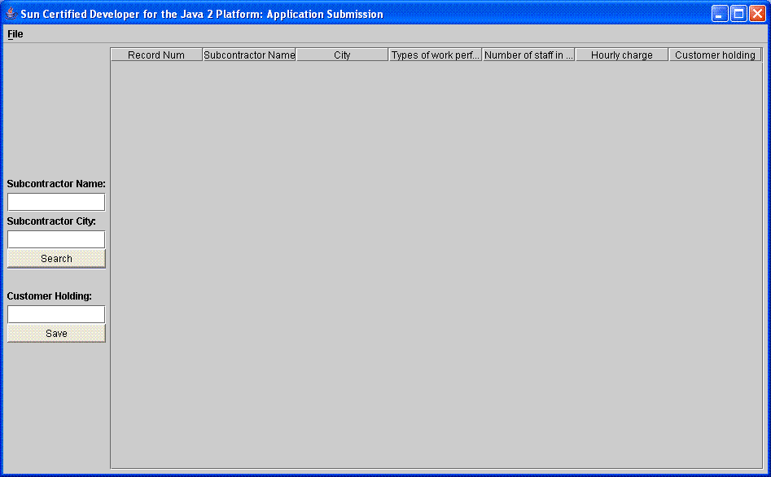
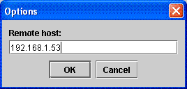
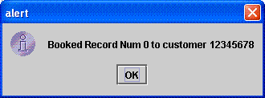

This document describes how to install and use the RunMe client-server application.
RunMe is an application that allows Customer Service Representatives (CSRs) to book (or un-book) one or more contractors for a customer. It includes a server that supports access to a legacy data file that is currently being used by the company's IT department and it allows CSRs to modify this data using a GUI that uses a client-server architecture for communication with the server.
RunMe is supported on any platform that supports the Java (TM) 2 Runtime Environment, Standard Edition. Please install JRE 1.4.2_06 or later before beginning the installation process.
RunMe requires at least 1GByte of disk space for the server and 30KB of disk space for the client.
In order to service client requests, the server that hosts the RunMe server application needs to allow connections through port 1099.
The server installation requires copying the RunMe server executable and database to the server. The server excutable is called runme.jar and the datafile is db-2x2.db. It is recommended to create a directory called runme and to copy these two files to that directory on the server system.
To verify the server is correctly installed, it is possible to start the server in stand-alone mode. In stand-alone mode, the client and server will be started and it will be possible to verify that the database file can be accessed. Use the following command to start the server in stand-alone mode:
java -jar runme.jar alone
You should see the GUI and can press the Search button to see records in the database using a local connection to the server.
You can also change the location of the legacy database file that accessed by the server by selecting the File/Options menu item. You will be shown a dialog box that contains the current location. Enter the new location and press the OK button. You can check that the database is found by pressing the Search button again.
Once the server if verified to be correctly installed, it is possible to start the server in server mode. In this mode, the server will be started and it will be possible for clients to connect to the server in order. Use the following command:
java -jar runme.jar server
Once the server is running, it is possible to stop the server by pressing Control-C in the window where the server is running.
The client installation requires copying the RunMe client executable to the client's system. The client excutable is called runme.jar and is the same executable that is used on the server. It is recommended to create a directory called runme and to copy this files to that directory on the client's system.
After the client is installed, it is possible to start the client in client mode. Use the following command
java -jar runme.jar
You should see the GUI and are ready to configure the client so that it is possible to connect to the server.

After the client is installed and the GUI has been started, it is possible to configure the client so that it is possible to connect to the server. You can change the server IP address by selecting the File/Options menu item. You will be shown a dialog box that contains the current server IP address (the default is localhost).

Enter the IP address where the server is installed and press the OK button. You can check that the server was found by pressing the Search button on the GUI.
The GUI supports searching for subcontractors by entering the contractor's name and city. Note that this search is case-sensitive so if you are searching for "Dogs With Tools" you will need to enter "Dogs" and then press the search button.
The GUI supports booking a subcontractors by selecting a row in the table, entering the customer's id in the "Customer Holding" textbox and pressing the Save button. Note that you must enter an 8-digit number that of the customer who is booking this record and it assume the CSRs know the customer IDs. Once a customer is successfully booked the CSR will be shown a confirmation dialog.

The GUI supports un-booking a subcontractors by selecting a row in the table, clearing the "Customer Holding" textbox and pressing the Save button. Note that you must enter not enter any digits in the textbox and this will clear the value of the customer holding on the server. Once a customer is successfully un-booked the CSR will be shown a confirmation dialog.
Once the client is running, it is possible to stop the client by selecting the File/Exit menu item.